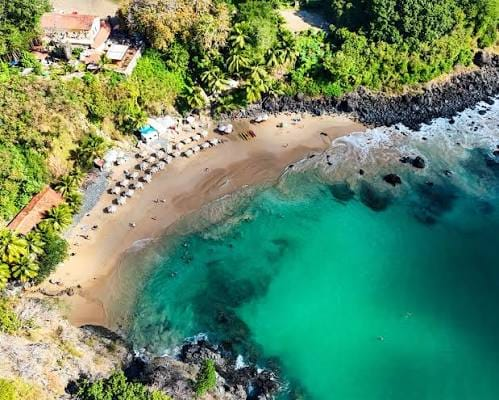
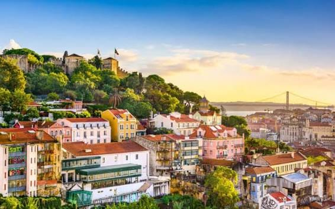

PARAÍBA · BRASIL
João Pessoa
Uma possibilidade para explorar no Nordeste brasileiro.
Consultar possibilidadesDESTINOS
Do Brasil ao mundo, cada destino guarda paisagens, culturas e experiências diferentes. Explore possibilidades, encontre inspiração e comece a planejar sua próxima viagem.
Converse sobre seu destinoENCONTRE UMA IDEIA
Filtre por região ou pesquise pelo nome. Estes destinos são referências para inspiração, não ofertas ou disponibilidade confirmadas.
PARAÍBA · BRASIL
Uma possibilidade para explorar no Nordeste brasileiro.
Consultar possibilidades
PERNAMBUCO · BRASIL
Uma referência de viagem no arquipélago pernambucano.
Consultar possibilidadesRIO DE JANEIRO · BRASIL
Uma possibilidade para conhecer a região Sudeste do Brasil.
Consultar possibilidades
RIO GRANDE DO SUL · BRASIL
Uma ideia de destino para explorar na região Sul.
Consultar possibilidades
PORTUGAL · EUROPA
Uma possibilidade para descobrir a capital portuguesa.
Consultar possibilidades
ARGENTINA · AMÉRICA DO SUL
Uma ideia de viagem para conhecer a capital argentina.
Consultar possibilidades

ESTADOS UNIDOS · AMÉRICA DO NORTE
Uma ideia de destino para conhecer na Flórida.
Consultar possibilidadesNão encontramos informações para esta consulta. Tente outra opção ou entre em contato com a unidade.
As imagens da página são ilustrativas e não representam os destinos listados. Os destinos são sugestões de inspiração, sem indicação de oferta ou disponibilidade comercial.
JÁ TEM UM DESTINO EM MENTE?
Entre em contato com a unidade e consulte possibilidades para organizar sua viagem.